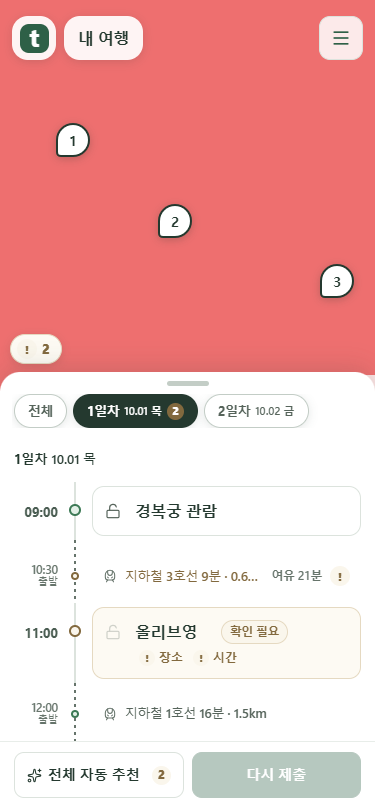
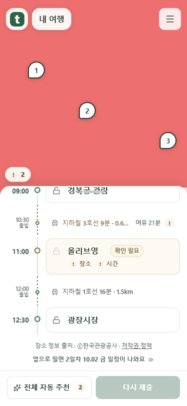
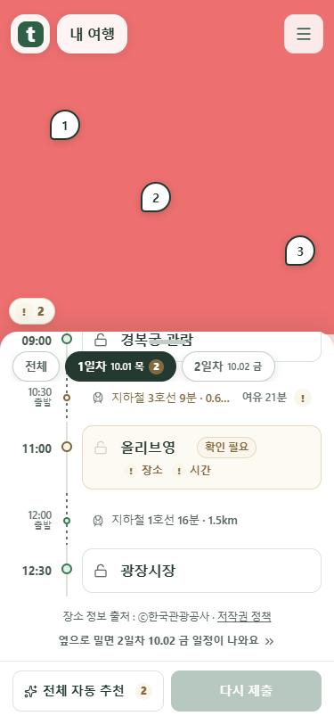
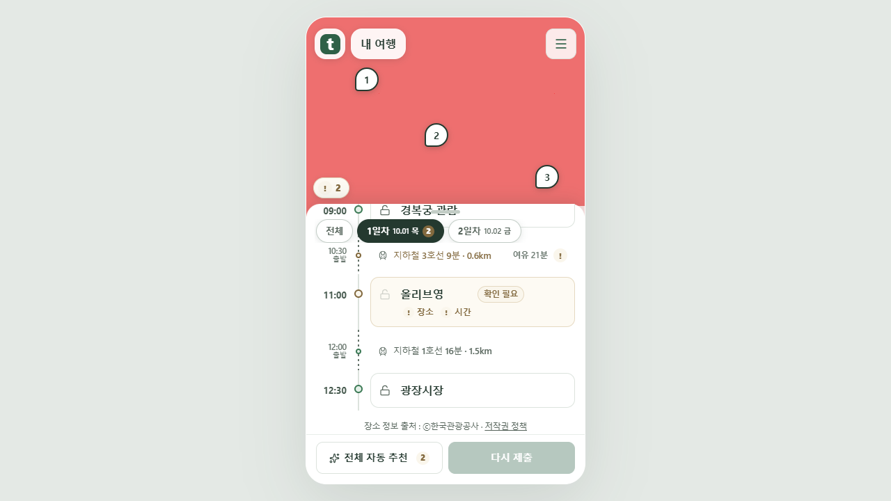

조작할 때는 숨고, 멈추면 다시 나타납니다
목록 스크롤·지도 조작 중에는 일차 줄만 사라집니다. 손을 놓고 마지막 스크롤로부터 0.8초 지나면 부드럽게 복귀합니다. 목록의 위치와 높이는 그대로 유지합니다.

조작 전
스크롤 중 — 일차 줄 숨김
멈춘 뒤 — 같은 위치에 복귀키보드와 동작 줄이기
일차 버튼을 직접 누르거나 방향키로 선택할 때는 숨기지 않습니다. 숨겨진 동안 Tab을 누르면 즉시 다시 접근할 수 있습니다. 동작 줄이기 설정에서는 위로 움직이는 효과를 사용하지 않습니다.

PC 1280×720실제 앱 화면을 Chrome에서 촬영했습니다. 여행 내용·단색 지도 배경은 mock 서버 시험용입니다. 공개 서비스 배포 전 로컬 화면입니다.